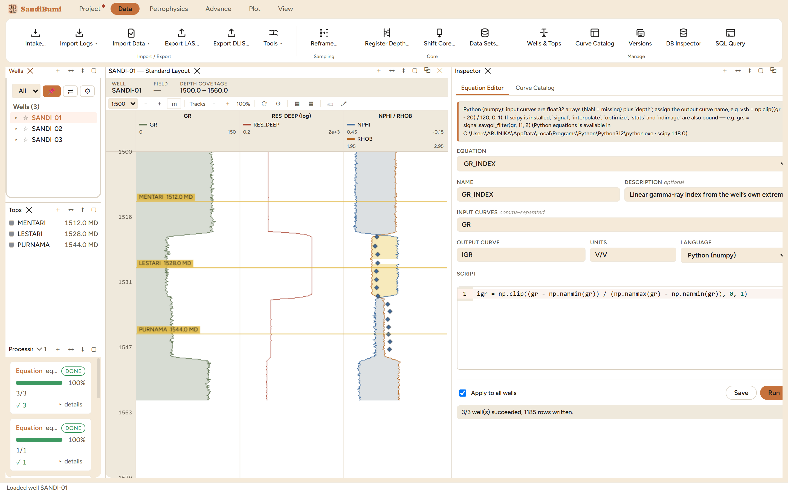

The Equation Editor (the Inspector's other tab, beside the Curve
Catalog) computes a curve you define yourself – a quick index, a
QC difference, a transform no shipped module covers. Equations run as
Python with numpy against the well's aligned curves, or in the legacy
Rhai expression language; either way the output lands in the project as
a real computed curve, versioned and provenance-stamped like a module's.
Reach for it when the question is one line of arithmetic away and a full
module would be ceremony.
The pane

A one-line gamma-ray index: input GR, output IGR, endpoints
taken from the well's own data. The result line reports the run the
way the write path saw it – wells succeeded, rows written.
The hint line is the contract. Input curves arrive as float32
arrays with NaN for missing, plus depth; the script
assigns the output name. The same line reports what a probe found on
this machine, so "is Python set up" is answered before anything
runs:
Python (numpy): input curves are float32 arrays (NaN = missing) plus `depth`; assign the
output curve name, e.g. vsh = np.clip((gr - 20) / 120, 0, 1). If scipy is installed,
`signal`, `interpolate`, `optimize`, `stats` and `ndimage` are also bound — e.g.
grs = signal.savgol_filter(gr, 11, 2) (Python equations is available in
C:\Users\...\Python312\python.exe · scipy 1.18.0)
Python runs as a separate process, never inside the app –
a missing or broken interpreter fails an equation run with a message,
never the application. A curve mnemonic always wins over a scipy
name: your data is never shadowed by a library.
Equations are saved by name and re-runnable. The picker at
the top recalls any saved definition; saving again under the same
name updates it.
Step by step
Open Data ▸ Curve Catalog (the Inspector) and switch to
the Equation Editor tab.
Name the equation, list its input curves, name the output and its
units, and write the script. The example computes a linear gamma-ray
index with endpoints from the data itself, so no constant is
invented:
Save, then Run. The order is enforced – pressing Run on
an unsaved definition refuses with "Save the equation before running
it." – and the run itself opens the run-custody prompt. The
custody refuses too, until a source is stated:
Enter the source/reference covering this run's explicit values.
Tick Apply to all wells to run field-wide; leave it off to
run only the selected well.
Reading the result
The result line speaks in write-path terms: the single-well run
reported "1/1 well(s) succeeded, 395 rows written.", the field run "3/3
well(s) succeeded, 1185 rows written." – and the stored IGR spans
exactly 0 to 1 on each well, because its endpoints are each well's own
extremes. The output shows up immediately in the Curve Catalog with its
provenance, in the log view as a plottable curve, and in the Processing
History as an EQUATION entry naming the definition and the well count.
A re-run writes a new version of the curve rather than silently
overwriting the old one.
QC and pitfalls
NaN is the missing value, and it propagates. A sample missing
in any input is missing in the output unless the script says
otherwise – which is the honest default. Do not fill gaps with a
constant inside an equation; the Fill Gaps module exists and flags
every sample it invents.
Data-driven endpoints are per-well statements. The example's
min/max normalization is deliberate for a demo; across wells it makes
each well span 0–1 regardless of absolute level, which is exactly
what a normalized index means and exactly wrong for anything meant to
be comparable in absolute terms. Choose per the question.
The custody source field is quoted downstream, so write a real
reference into it. What you type travels with the curve into
deliverables and diagnostics – a citation helps the next reader;
a throwaway phrase follows the curve around forever.